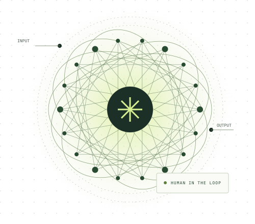

Confident mistakes
A chatbot might invent a reference. Open the original source before repeating a claim.
"With great power, comes great responsibility," was a saying popularized by Spider-man. Though AI works on a different kind of web, the same principle presents itself to be just as important in today's technological environment.
Discover The Power
While AI is definitely a useful assistant, it is an unreliable decision-maker.
01 / UNDERSTAND
Artificial intelligence is manufactured to be efficient. [1]
According to the AI Group of Experts at the OECD (AIGO), AI systems utilize machine learning to teach themselves over time. They perceive, reason, and act based on the raw data it interprets. [2]
Simplified: training builds the model; a new input prompts an output.
02 / IN REAL LIFE
Explore an illustrative use case.
The benefit and the responsibility travel together.
Ask for practice questions or a simpler explanation of a difficult concept.
Different explanations can help you get unstuck and practise at your own pace.
A confident answer may contain an invented fact. Check it against course materials, then explain it yourself.
03 / THE TRADE-OFFS
NIST identifies risks including false information, harmful bias, privacy loss and security threats. [2] Here is how they might show up—and what to do.
A chatbot might invent a reference. Open the original source before repeating a claim.
A hiring model may repeat historical bias. Test outcomes across groups and allow human appeals.
Private uploads can expose information; deepfakes can impersonate people. Keep sensitive data out and verify urgent requests through another channel.
An agent with system access could make damaging changes. Limit permissions and require approval for consequential actions.
04 / THE ROAD AHEAD
It needs resilient infrastructure and people who can question the output.
The IEA estimates data centres used 485 TWh of electricity in 2025 and projects roughly 950 TWh in 2030. These figures cover all data centres, not just AI. [3]
AI could support research and public services. It could also scale cyberattacks. Cloud outages may interrupt dependent services; unmet local power demand could strain grids. Blackouts are a risk to manage, not an inevitable forecast.
My view: pair useful automation with human review, backup processes and careful energy planning.
KEEP EXPLORING
Primary sources behind this guide.
Reviewed 6 November 2026.
BEHIND THE PAGE
This page follows one thread: what AI does, where it helps, why it needs checking, and what responsible use might look like. Short sections and paired benefits and cautions keep the explanation readable. Muted green, dark text and an abstract network illustration give the page a calm visual style without suggesting that AI is a human brain.
The site uses semantic HTML, a separate CSS file and a small JavaScript file for the example selector. Relative paths let it work in a GitHub Pages project folder. The illustration is an original SVG, so it stays sharp without a large image download. Native buttons, visible focus indicators and a skip link support keyboard access. The layout stacks on smaller screens, and reduced-motion preferences are respected.
AI assistance: ChatGPT helped research, draft, design and code this page. Factual claims were checked against the linked sources; scenarios and interpretation are labelled separately. Static checks covered file paths, page anchors and script syntax; a simulated DOM checked example switching. Browser layout and keyboard checks remain for the final review. Review the final work before submitting it as your own.